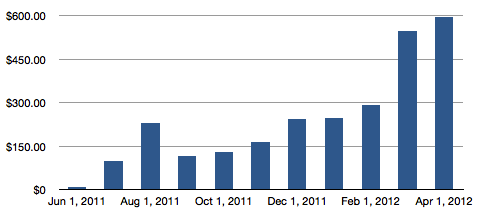
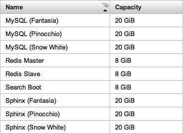

A few things have changed since I last talked about hosting. Tweet Marker passed 200,000 total users to the API. There are more apps and more platforms. And of course Plus launched with new requirements for database and search indexing of tweets.
Here’s a graph showing monthly hosting costs for the last year, stopping just short of $600/month for April:

The first dip was when I moved away from Heroku’s dedicated PostgreSQL database, to Redis on EC2. The more recent increase is when I updated capacity for Tweet Marker Plus.
Tweet Marker currently runs on both Heroku and Amazon EC2. On Heroku, there are 6 dynos: 5 web dynos with 3 Unicorn processes each, and 1 background worker. I also run hourly scheduled tasks that add a small number of extra dyno-hours, and sometimes I’ll fire up additional temporary workers.
For Amazon, I run with 3 medium server instances: 1 for Redis master, 1 for Redis slave, and 1 for search with MySQL and Sphinx. The search server is partitioned across multiple EBS volumes, each one mounted as a separate MySQL database and Sphinx index. It is possible for me to move a database or search index shard to a different EC2 instance if I need to, as well as move customers between shards.
The volumes look like this in Amazon’s admin UI:

I picked 20 GB shards because it seemed like about the point where the database would be too big to be fast, given the modest hardware. It’s enough to hold several months of tweets for all the users in a shard. I estimate how many users should be in each shard, and when it reaches that number I roll new accounts to the next shard, and so on.
Backup dumps for the Redis database and MySQL get sent to S3 every hour and every day, where I keep the last 24 hourly backups and the last 31 daily backups. I also do occasional EBS snapshots.
I don’t currently need a MySQL slave for backups. If I lose a drive, when I restore the last hourly backup, Tweet Marker Plus will automatically add any missing tweets lost during the downtime to bring things back to a current state.
Overall I’m happy with this setup. It’s as simple as I could design it. Hosting is not cheap, but I think I can run for the rest of the year with very few changes and mostly fixed costs. I also plan to switch to reserved instance pricing at Amazon, which should be a significant discount.
If you’ve made it this far, you probably care enough about servers and Twitter that you should consider signing up for Tweet Marker Plus yourself. Check out the details here.
{kind=link}